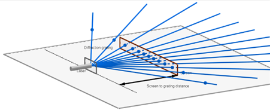
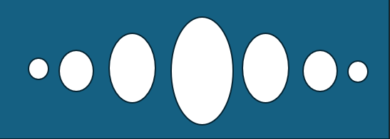

LASER GRATING
PROCEDURE
The laser source and grating are mounted on the stand as shown in Fig.1(a). The laser is switched ON and the beam of light is allowed to fall on the grating. The diffracted beams are allowed to fall on a screen. The spectrum in the form of spots are seen on the screen as shown in Fig. 1(b).


In the spectrum, the intensity of the diffraction beams decreases as we move from zeroth order to higher order. The first order is brighter than the second order and so on. The positions X1, X2, X3. of the spots belonging to the first order, second order, etc., on either side of the central maximum are marked on the screen. The average value of is calculated for various orders. Then the value of the grating element is calculated using the given formula.